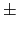

Next: Arithmetic and Logical Instructions Up: Description of the MIPS Previous: Byte Order
MIPS is a load/store architecture, which means that only load and store instructions access memory. Computation instructions operate only on values in registers. The bare machine provides only one memory addressing mode: c(rx), which uses the sum of the immediate (integer) c and the contents of register rx as the address. The virtual machine provides the following addressing modes for load and store instructions:
| Format | Address Computation |
| (register) | contents of register |
| imm | immediate |
| imm (register) | immediate + contents of register |
| symbol | address of symbol |
| symbol  imm | address of symbol or immediate |
| symbol (register) | address of symbol + contents of register |
| symbol imm (register) | (address of symbol or immediate) + contents of register |
Most load and store instructions operate only on aligned data. A quantity is aligned if its memory address is a multiple of its size in bytes. Therefore, a halfword object must be stored at even addresses and a full word object must be stored at addresses that are a multiple of 4. However, MIPS provides some instructions for manipulating unaligned data.
Ian Moor 2009-03-11